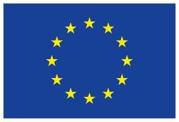

<div id="modal-full" class="uk-modal-full" uk-modal>
  <div class="uk-modal-dialog">
    <button
      class="uk-modal-close-full uk-close-large"
      type="button"
      uk-close
    ></button>
    <div class="uk-grid-collapse uk-child-width-1-2@s uk-flex-middle" uk-grid>
      <!-- <div class="uk-background-cover" uk-height-viewport>
            </div> -->
      <div class="uk-padding-large">
        <div class="logos">
          <div class="logo-container logo-hotmaps">
            
          </div>
          <div class="logo-container logo-europe">
            
          </div>
        </div>
        <h1>
          The Hotmaps project will develop a toolbox that supports local,
          regional and national heating and cooling planning processes.
        </h1>
        <h1 style="text-align: center">THE TOOLBOX IS :</h1>
        <h2>USER-DRIVEN</h2>
        Developed, demonstrated and validated in close collaboration with 7
        European pilot areas.

        <h2>OPEN SOURCE</h2>
        The tool and all related modules will run without requiring any other
        commercial tool or software. Use of and access to Source Code is subject
        to Open Source License.

        <h2>COMPATIBLE</h2>
        The tool can be used in all 28 EU Member States thanks to a default open
        data set.
      </div>
      <div class="uk-padding-large">
            <p>
                The overarching goal of Hotmaps is the development of an open source heating / cooling mapping and planning toolbox and to provide default data for EU28 at national and local level. These data and tool allow public authorities to identify, analyse, model and map resources and solutions to supply energy needs within their territory of responsibility in a resource and cost efficient way. Hotmaps will help authorities to develop heating and cooling strategies on local, regional and national scale which are in line with RES and CO2-Emission targets on national and EU level.
            </p>
            <strong>Main objectives of the project  :</strong>
            <div>
                <p>
                    1. <strong>Develop an open source toolbox (Hotmaps toolbox)</strong> that will effectively and comprehensively support local, regional and national heating and cooling planning processes.
                </p>
                <p>
                        2. <strong>Provide a default open data set</strong> to lower the initial barrier in applying the tool for regions across EU-28 member states and include the ability that the users can adapt and provide more accurate, large and complex data for data for a specific area.
                </p>
                <p>
                        3. <strong>Provide a tested and user friendly open source software tool</strong> which is based on user needs. Guarantee wide usability, flexible adjustability and concrete application of the tool within and beyond the project duration.
                </p>
            </div>
            The Hotmaps project started in October 2016 and will last four years.
      </div>
    </div>
  </div>
</div>
